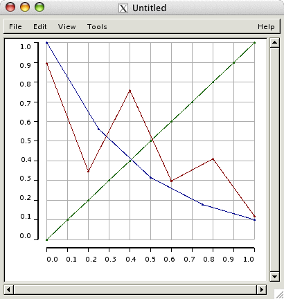
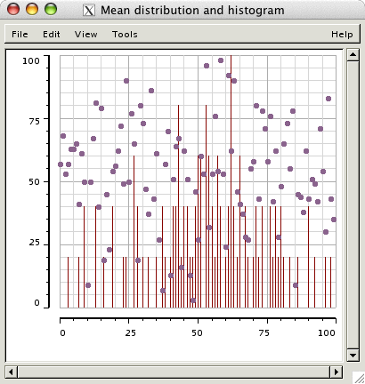
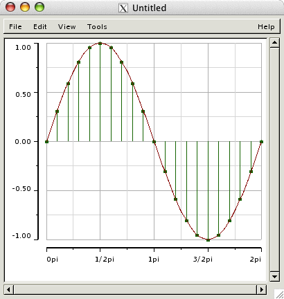

- [Topic]
- Plotter
Plotter is a graphical tool for displaying, editing and sequencing data. Data can be passed to plotter in several different formats: lists of x y coordinate values, lists of CLOS objects, or seq objects containing CLOS objects. Once data has been loaded it can be manipulated (displayed, edited, searched, sequenced) using the GUI or by calling the underlying Plotter functions from the Lisp interpreter.
Plotter API
The following entries describe Plotter's functional interface:
- axis
- defaxis
- plotter
- plotter-add-layer
- plotter-close
- plotter-data
- plotter-front-styling
- plotter-property
- plotter-redraw
- plotter-resize
- plotter-scroll
- plotter-zoom
- point
Displays, Axes, Layers and Points
A plotter window provides a two-dimensional view onto one or more sets of coordinate data. Sets are grouped into displays where each display defines a particular mapping of the data to their point presentation in the display. A display's visual characteristics are controlled by axis objects that determine which slots in the data sets are plotted and how the slot values are mapped into the display's presentation. Each axis can control up to two slots so a total of four degrees of interest can be mapped to the horizontal, vertical, width, and height properties of points drawn in the window. See the documentation on axis and defaxis for more information.
Within a single display each individual data set appears in its own layer. Plot editing takes place on the front-most layer; background layers can be brought forward by clicking on their visible points or by selecting the desired layer using the View>Layer menu. Layers can be made transparent, invisible or opaque. If a layer is transparent then data sets behind it are also visible (Example 1). If a layer is made invisible then its data will not appear in the display until it once again made visible.
Depending on how the display axes are defined, each layer of data can switch between seven basic viewing styles:
- Line and point
- Line
- Point
- Bar and point
- Bar
- Box
- Bubble
- Notation (not yet implemented)
Selections
A selection is a group of points or a region of the display that has been highlighted for editing. Editing commands affect only the current selection. Selection can be initiated with the mouse or by evaluating selection expressions using the Editing Tool.
Plotter supports two types of selections: regions and points. Regions define a range of values within the span of the horizontal and/or vertical axes. Points represent the slot values that are being depicted in the display. Point selections are drawn in black; region selections are drawn in a highlighted background color.
To cancel the current selection use the Edit>Clear menu item or left-click on an empty portion of the display.
Point selection with the mouse
Points in the front-most layer can be selected by left-clicking them with the mouse. Use Control-left-click to add a point to an existing selection or to remove the point if it is currently selected. To select all the points within a rectangular region of the display, press the left-button down and sweep out the region of interest in the display. Releasing the button will select all the points within highlighted region. To select all the points in the layer use the Edit>Select All menu item.
Region selection with the mouse
To select regions in a display, activate the "Cursor Mode" tab in the Editing Tool and press the "Select Regions" radio button. Then mouse-drag regions in the display to select them.
Converting between point and region selections
To convert an existing selection from one type to the other, select the target type (either "Select Points" or "Select Regions") in the Cursor Mode tab of the Editing Tool. The existing selection in the Plotter window will then switch to the target type.
Editing
Once point or region selection has been established it can be edited using mouse gestures or by selecting commands from the Edit menu or Editing Toll. Editing commands only affect the current selection in the front-most layer of the display. Region editing is not yet implemented.
Point editing with the mouse
To move a point selection, mouse-drag it to its new location. Selected points are drawn in outline as they are moved. Release the mouse to complete the move.
To delete the current selection, press the Backspace or Delete keys or use the Edit>Delete menu item. To select and delete points in a single operation, use the "Delete Points" mode found under the Cursor Mode tab of the Editing Tool.
To add new points to the display, use the "Add Points" mode found under the Cursor Mode tab in the Editing Tool. Select or enter the class to use for creating points each time you click in the Plotter display. To "draw" points along a trajectory, hold the mouse down and draw the shape. New points will be added at the pixel distance indicated by the spin button controller in the Add Points line.
To edit slot value(s) in the selected points, double-click the selection to open an Edit Object window. If the selection contains only a single point then all the object's slot values will be visible in the slot value buffers. To change a slot's value, click inside its associated edit buffer, type the new value and press return. If the current selection contains multiple points no slot values will be displayed in the edit buffers but typing a value and pressing return will set that value in every selected object.
The Menubar
Not yet written.
Tool Windows
Tool windows facilitate working with the plotter display in some way. Tools belong to the plotter they affect and are automatically closed when the plotter window itself is closed. Only one tool window of each type is open at any one time. Tools perform actions immediately, that is, there are no annoying OK, Cancel or Revert buttons to protect you from messing up your data.
Editing Tool
The Editing Tool facilitates editing and point selection in the plotter window. The tool currently contains three tabbed displays: Cursor Mode, Selecting, and Mouse Control.
- Cursor Mode
- Selects between four possible editing modes: Select Points, Select Regions, Add Points and Delete Points. Each mode is indicated by an appropriate cursor in the Plotter display.
- Selecting
- Select points by evaluating expressions. There are two different ways to select by expression, both methods are activated by pressing the Return key when the cursor is inside a constituent expression field. Positional selection selects points according to their ordinal position in the data set. A lower bound, upper bound and increment may be specified. Use the increment to select only those points that lie at multiples of the increment between the starting and ending indices. Conditional selection selects points by mapping all data and selecting only those points for which the conditional slot clause(s) you specify return true. If more than one clause is specified they are AND'ed together.
- Mouse Controls
- Allows various aspects of mouse behavior to be controlled. Activate "Connstrain motion" to restrict mouse movement to the specified dimension (horizontal or vertical) as selections are made, point selections are moved, or new points are added. Activate "Draw mouse guide" to display cross-hairs when the mouse moves (not yet implemented). Activate "Set 'Add Points' hook" to specify a function to called on each new point whenever adding is triggered by a mouse click the display. The hook function should return a point or a list of point to add or false to stop any point from being added (not yet implemented).
Zooming Tool
The Zooming Tool the aspect ratio of the display along its horizontal and/or vertical axes to be controlled. Zooming factors apply to all layers in the display. The tool also lets the zooming policy to be set, i.e. what parts of the display are affected by zooming. By default, point sizes are affected and lines sizes are not. Zooming without affecting either lines or points allows the distances between points to be recalibrated without changing the actual size of the points in the display.
Coloring Tool
The coloring tool allows he color of the front-most layer to be changed.
Sizing Tool
The sizing tool allows the basic size of points and lines to be controlled. The basic size is the line or point size at zoom factor 1.
Examples
Example 1. Three layers in the default :line-and-point view at half zoom.
(plotter :zoom .5 (loop for x from 0 to 1 by .2 for y = (random 1.0) collect x collect y) (loop for x from 0 to 1 by 1/10 for y from 0 to 1 by 1/10 collect x collect y) (loop for x from 0 to 1 by .25 for y = (expt 10 (- x)) collect x collect y))

Example 2. Plotting a random distribution with its histogram using :point and :bar.
(let* ((maxh 0) (hist (make-list 100 :initial-element 0)) (rans (loop for x from 0 below 100 for y = (floor (+ (random 100) (random 100) ) 2) collect x collect y do (incf (elt hist y)) (setf maxh (max (elt hist y) maxh)))) (bars (loop for y in hist for x from 0 when (> y 0) collect x and collect (* (/ y maxh) 100)))) (plotter :title "Mean distribution and histogram" :x-axis (axis :percentage) :y-axis (axis :percentage) :view '(:point :bar) :color '("plum4" "dark red") :point-size 6 rans bars))

Example 3. Defining new axis prototypes and :line and :bar-and-point views.
(defaxis :unit () :minimum -1 :maximum 1 :increment 1/2 :labeler "~,2F" :ticks-per-increment 2) (defaxis :radians () :minimum 0 :maximum (* pi 2) :increment (/ pi 2) :ticks-per-increment 2 :labeler (lambda (x) (format nil "~Spi" (rationalize (/ x pi))))) (plotter :y-axis (axis :unit :slot 'y) :x-axis (axis :radians :slot 'x) :point-size 5 :view '(:line :bar-and-point) (loop for x from 0 to 1 by 1/100 for r = (* 2 pi x) collect r collect (sin r)) (loop for x from 0 to 1 by 1/20 for r = (* 2 pi x) collect r collect (sin r)))

Example 4. Plotting linear amplitude vs. log frequency.
(let ((fund 110) (harms 16)) (plotter :x-axis (axis :hertz :slot 'x :minimum fund :maximum (* fund harms)) :y-axis (axis :normalized :slot 'y) :color "dark violet" :view ':bar-and-point :point-size 5 (loop for h from 1 to harms collect (* fund h) collect (/ 1 h))))
![[plotter4.png]](plotter4.png)
Example 5. Sequencing micro-tonal MIDI data using the :box view. Musical example by Michael Klingbeil taken from Chapter 10 of Notes from the Metalevel.
(defparameter ct9 '(t 0 8)) ; micro-tuning in 1st 9 channels (defun arpeggiate-exprhy (keynums time rate midpoint-frac amplow amphi legato bass-legato bass-cutoff last-legato) (let* ((segs (length keynums)) (last (1- segs)) (midpoint (floor (* segs midpoint-frac))) ;; deltas below midpoint follow one curve, above another. (deltas (append (explsegs midpoint (* midpoint-frac time) rate) (explsegs (- segs midpoint) (* (- 1 midpoint-frac) time) (/ 1 rate))))) (process for i from 0 for k in keynums for d in deltas for r = (if (< k bass-cutoff) bass-legato (if (= i last) (* last-legato d) (* legato d))) for a = (between 0.45 0.5) then (drunk a 0.1 :low amplow :high amphi ) output (new midi :time (now) :keynum k :amplitude a :duration r) wait d))) (defun distort-harmonics (fund distort) (loop for h from 1 below (floor (/ 25.0 distort)) if (odds (* 0.9 distort)) collect (keynum (* fund (expt h distort)) :hz t))) (defun arpa-harmonic (note dur gap) ;; spawn overlapping arpeggios with mean duration of dur and mean ;; gap between arpeggio starts of gap seconds. each arpeggio is ;; upward with the general direction of arpeggio starting notes ;; moving downward (process with fund = (hertz note) for distort from 0.7 below 1.05 by 0.05 for notes = (distort-harmonics fund distort) sprout (arpeggiate-exprhy notes (* (vary dur 0.1) distort) (between 4.0 0.25) (between 0.3 0.6) 0.3 ; amplow 0.8 ; amphi ; bass-legato (* dur distort 0.7) 2.0 ; legato 59 ; bass cutoff 1.0) ; last-legato wait (vary gap 0.4))) (defparameter pw (plotter :x-axis (axis :seconds :maximum 60 :labeler (lambda (x) (prin1-to-string (floor x))) :slot '(time duration)) :y-axis (axis :keynum :minimum 24 :maximum 96 :pixels-per-increment 96 :labeler (lambda (x) (format nil "~A" (note x))) :slot 'keynum) :view ':box :point-height 6 (events (arpa-harmonic 'g1 7.0 5.0) (new seq)) (events (arpa-harmonic 'g1 7.0 5.0) (new seq)))) (events (plotter-data pw) "arpa.mid" :channel-tuning ct9)
![[plotter5.png]](plotter5.png)
→ arpa.mid
Supported Environments
See the documentation on Configuring Plotter for the list of supported Lisp environments and pre-installation instructions.
Lacunæ and Bugs
Plotter currently supports basic display, selection and editing commands but many important features remain to be designed and implemented, particularly those related to sequence editing. I would welcome ideas for new features, opinions on how to improve existing features, and code contributions.
The next round of implementation will try to address the following missing features:
- Tabbed selection for switching between multiple (alternate) displays, and tabbed layer selection within a single display
- Load/save, import/export, computing new layers from algorithms
- Playback and sound io (audio and midi) in general. For example a "transport" tool could be developed to facilitate outputting real-time to MidiShare.
- New display types (Notation, Listing, etc.)
- Copy/Paste in/to/from plotter windows
- Lots of sequencing commands
gtk-main explicitly when a plotter window is
open. The most important side-effect of this is that the Lisp Listener
is now unavailable for input while a Plotter window is open. I hope to
have an answer for this at some point. I do plan to provide an
"Edit>Eval" item so that Lisp expressions can be evaled even if the
Listener is blocked.
Open Problems
- Display during scrolling under Linux/X11 is choppy. I'm not sure why this happens, and it does not occur on Darwin/X11. Maybe the solution is to get a Mac :).
- The selected graphing style in the View menu does not automatically reset when a new layer is selected from the View>Layer sub-menu.